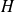

Mise en œuvre d'un code de Hamming [7,4]
Le code de Hamming [7, 4] permet de détecter une erreur dans la transmission d'une donnée et de la corriger.
Voici les deux matrices et  qui permettent de coder le message à transmettre, et de détecter l'erreur dans le message reçu. Elles sont données sous forme de listes.
## Code de Hamming [7, 4]import numpy as np
G = np.array([\
[1, 1, 0, 1],\
[1, 0, 1, 1],\
[1, 0, 0, 0],\
[0, 1, 1, 1],\
[0, 1, 0, 0],\
[0, 0, 1, 0],\
[0, 0, 0, 1]])
H = np.array([\
[0, 0, 0, 1, 1, 1, 1],\
[0, 1, 1, 0, 0, 1, 1],\
[1, 0, 1, 0, 1, 0, 1]])
Question
À partir de la description du code Hamming [7, 4] faite dans le cours, écrire les trois fonctions suivantes :
Fonction codage() : elle reçoit en entrée un vecteur comprenant 4 valeurs (0 ou 1) correspondant à la donnée à coder et renvoie le message à transmettre sous la forme d'un vecteur colonne.
Fonction analyse_message() : elle reçoit en entrée un vecteur de 7 valeurs correspondant à un message reçu. Elle retourne un booléen (True si le message ne comprend pas d'erreur, False dans le cas contraire) et la ligne à corriger (None si le message ne comprend pas d'erreur).
Fonction decodage() : elle reçoit en entrée une liste de 7 valeurs correspondant au message reçu. Elle utilise les résultats de la fonction analyse_message(), corrige les éventuelles erreurs et retourne la donnée initiale de 4 bits sous forme d'une liste.
Cette proposition utilise les fonctions de calcul matriciel du module numpy.
Voici le fichier ressource fourni par le concours Centrale-Supélec pour ses épreuves orales.
Calcul matriciel, synthèse Python fournie par les oraux de Centrale-Supélec
Pour faciliter mes tests, j'utilise une fonction D() qui me permet d'entrer les données sous la forme d'une chaîne de caractère, par exemple '0110' et qui me renvoie la donnée sous la forme attendue d'un vecteur de
bits.
J'utilise aussi sa fonction inverse notée M().
def D(mot_binaire):
'''renvoie le mot binaire entré en argument sous la forme d'une liste de bits.'''return(np.array([[int(b) for b in mot_binaire]]).T)
def M(vect):
'''renvoie le vecteur entré en argument sous forme d'une chaîne de caractère.'''mot = ''
for elt in vect:
mot += str(elt[0])
return(mot)
Il faut faire attention avec numpy de travailler avec des tableaux à deux dimensions pour pouvoir les transposer. En effet, array([1, 2]).T renverra array([1, 2]) et non pas le vecteur colonne car pour numpy, array([1, 2]) est un tableau à une dimension.
Il faudra donc écrire array([[1, 2]]).T pour obtenir array([[1], [2]]).
def codage(donnee, matrice = G):
MT = np.dot(matrice, donnee)
MTb = np.array([i % 2 for i in MT])
return(MTb)
def conv_vec_entier(vect):
'''renvoie la conversion en entier du vecteur binaire passé en argument.'''return(int(sum([i * pow(2, j) for (i, j) in zip(vect, list(range(len(vect) - 1, -1, -1)))])))
def analyse_message(MR, matrice = H):
Err = np.dot(matrice, MR)
Errb = np.array([i % 2 for i in Err])
ligne = conv_vec_entier(Errb) - 1
if ligne == -1:
return(True, None)
else :return(False, ligne)
def decodage(MR, matrice = H):
Test, ligne = analyse_message(MR, matrice)
if not Test:
MR[ligne] = (MR[ligne] + 1) % 2
return(np.concatenate((MR[2:3], MR[4:]), axis = 0))
J'ai ajouté une fonction conv_vec_entier() qui me permet de convertir en entier les vecteurs binaires résultats du calcul d'erreur.